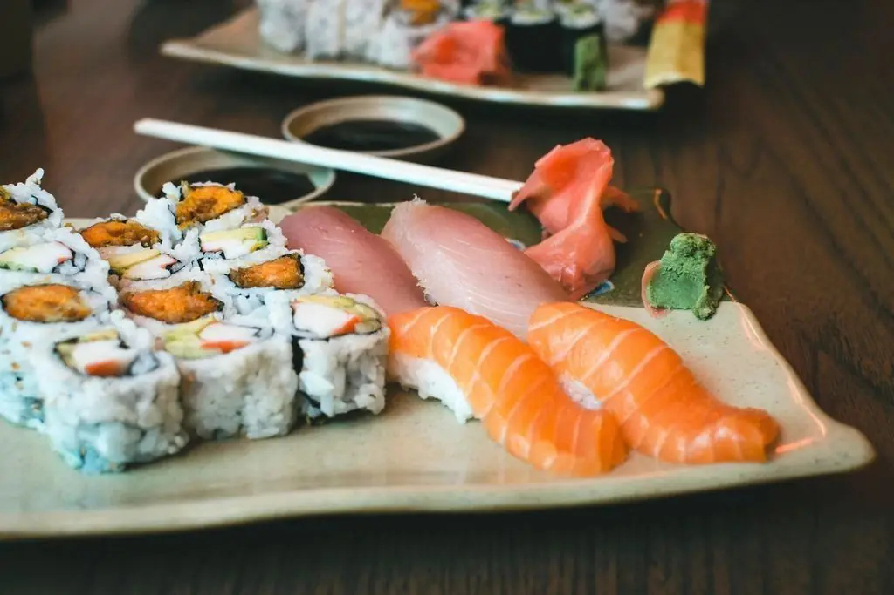
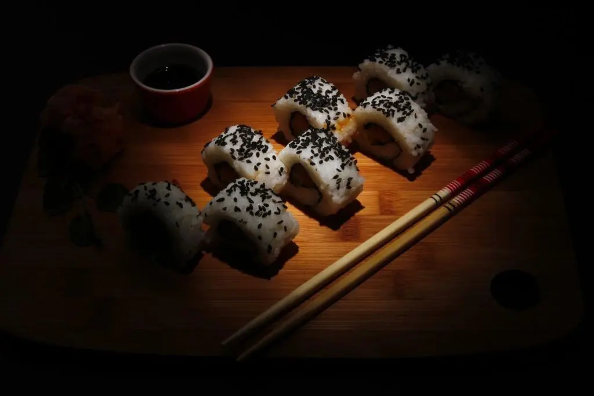

Lunch & take-away
I dag är vi nio personer i köket och i matsalen. Riset kokas fyra gånger om dagen och smaksätts med vår egen risvinäger, och all fisk skärs först när beställningen kommer in – också den som ska hämtas.
Äta här eller ta med?
Lunch vardagar 11–14
Välj dagens tio bitar, en poké med lax eller tofu eller veckans varma rätt. Misosoppa, sallad och grönt te ingår.
Lunchen kostar 135–149 kronor och serveras på under tio minuter.

Take-away
Beställ på telefon eller i webbshopen och hämta vid disken efter femton minuter. Sushin packas i lådor av bambu, och soja och ingefära ligger i separata burkar.
Vi har inte hemkörning – det tar för lång tid för riset.

Omakase vid disken
Torsdag till lördag har vi två sittningar vid disken klockan 18 och 20.30. Kocken serverar åtta rätter efter vad som kom in med morgonens leverans.
Tolv platser per sittning, bokas i förväg.

Sushifat och catering
Till kontorslunch, studentfest eller fyrtioårskalas gör vi fat med mellan 48 och 480 bitar. Vi märker varje fat med allergener.
Beställ senast två dagar innan, hämta i baren.
Så fungerar take-away
- 1

Beställ
Ring eller beställ i webbshopen, och säg till om allergier direkt.
- 2

Vi skär och rullar
Fisken skärs först när din beställning kommer in, aldrig i förväg.
- 3

Hämta vid disken
Efter femton minuter står påsen märkt med ditt namn vid kassan.
- 4

Ät inom en timme
Sushi är godast i rumstemperatur – ställ den inte i kylen.